-
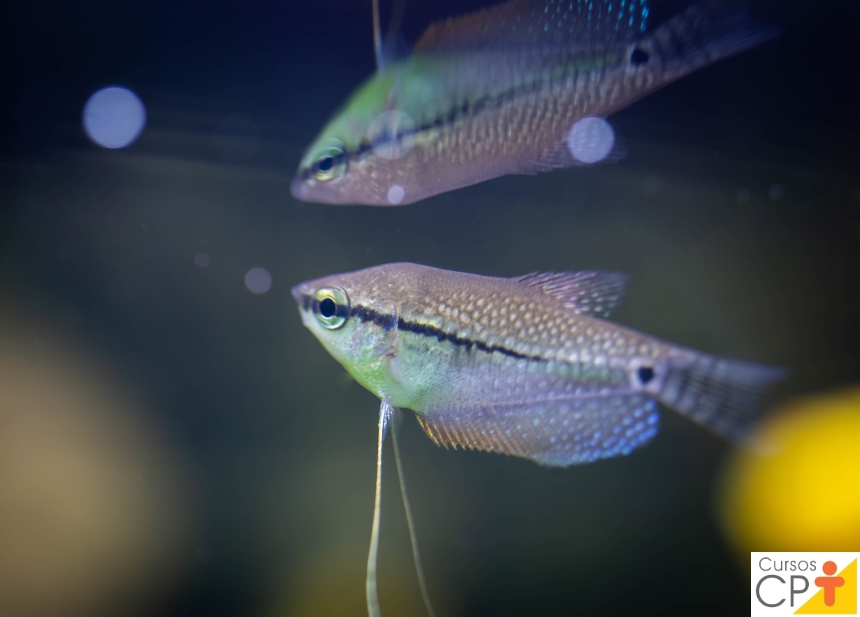
Tricogaster Leeri
- Origem: Ásia - Comprimento máximo:12 cm - pH: 6,8 a 7,2 - Temperatura: 21 a 28ºC - Aquário: médio a grande com plantas - Comportamento: pacífico
R$200,00
-
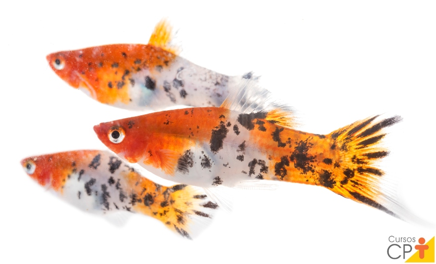
Platy
- Origem: América Central - Comprimento máximo: 6 cm - pH: 7,0 a 7,2 - Temperatura: 24 a 28ºC - Aquário: médio e bem plantado - Comportamento: pacífico, mas algumas vezes os machos são agressivos entre siR$300,00
-
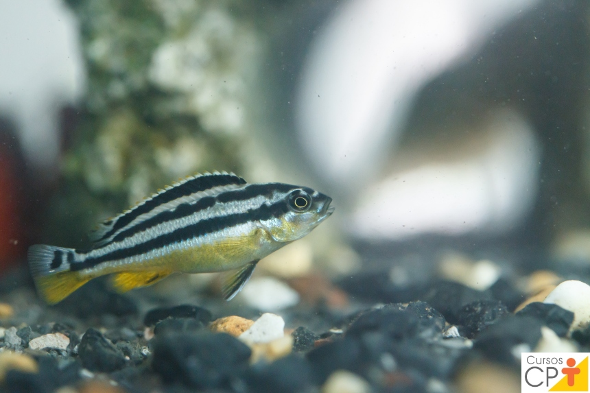
Paulistinha
- Origem: Índia Oriental e Bangladesh - Comprimento máximo: 5 cm - pH: 7,0 - Temperatura: 20 a 26ºC - Aquário: médio e bem plantado - Comportamento: pacífico e muito ativoR$400,00
-
Beteira castelo
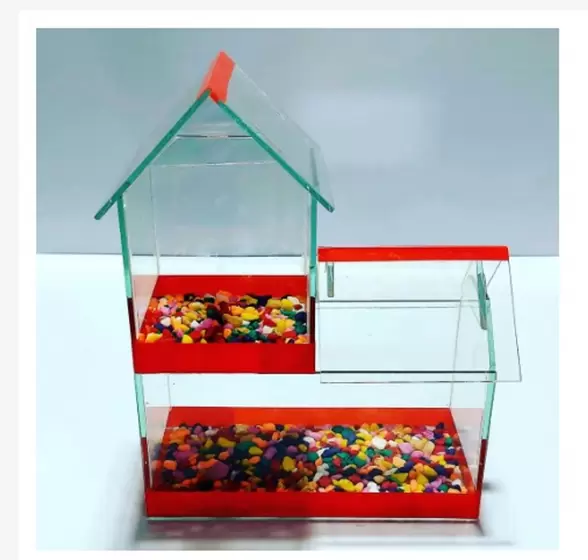Aquario Beteira Betta Castelo 2 Peixes - JD PET
BETEIRA MODELO CASTELO COM PEDRINHAS- Suporta até 3 peixes, 1 na parte de cima e 2 na parte de baixo
R$150,00
-
Beteira Decorada
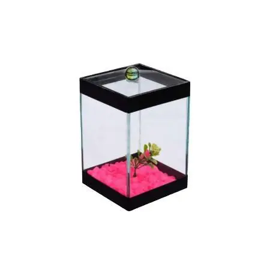Beteira decorada (10x10x15) - AQUABETER
Beteira decorada (10x10x15) DESPACHAREMOS SUA COMPRA EM ATÉ 24H ÚTEIS APÓS A CONFIRMAÇÃO. Aquários para peixes que não necessitam de oxigenação na água.
R$60,00
-
Beteria Casinha Dupla
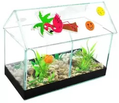Beteira casinha dupla decorada (18x09x10) - AQUABETER
BETEIRA MODELO CASTELO COM PEDRINHAS- Suporta até 3 peixes (1 na parte de cima e 2 na parte de baixo
R$30,00
-
Sifão Aspirador
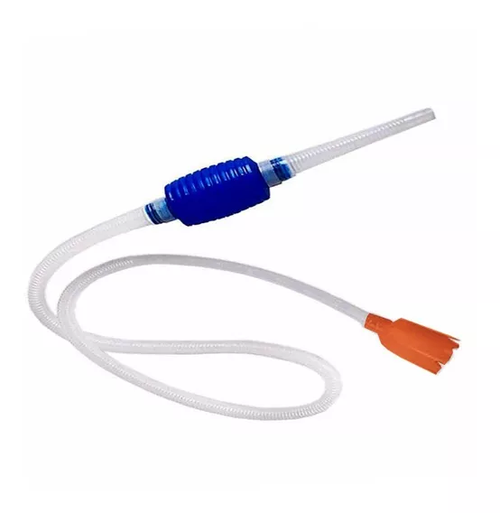O Sifão de Limpeza para Aquário é o equipamento ideal para manter a saúde e o bem-estar dos seus peixes. Com um design fácil de usar, esse sifão de limpeza é a escolha certa para quem deseja manter o seu aquário sempre limpo e agradável. Com sua bomba manual de limpeza, você poderá manter o aquário livre de impurezas e sujeiras, oferecendo aos seus peixes um ambiente saudável para viver.
R$60,00
-
Sifão Eletrico

Sifão elétrico para limpeza / TPA aquário e lago retira sujeira do fundo - Sunsun HXS-02 800 L/h 16W filtra água de volta para o aquário
R$70,00
-
Sifão Sifonador
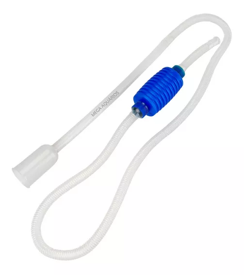ifão aspirador com bomba vácuo manual para limpeza, drenagem e troca parcial de água TPA aquários, lagos, tanques, cascalho, substrato
R$100,00
-
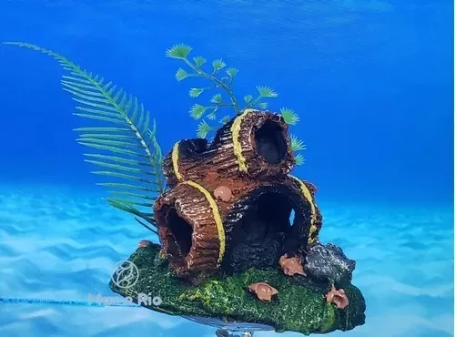
Enfeite Aquário Barril Duplo Toca Do Betta Decoração Plantas
PRODUTO ARTESANAL - SUJEITO A ALTERAÇÃO DE FORMA E CORES* Descrição Enfeite Aquário Barril Duplo Toca Do Betta com Plantas Medidas: 10,00 x 6,00 x 7,00 cm
R$40,00
-
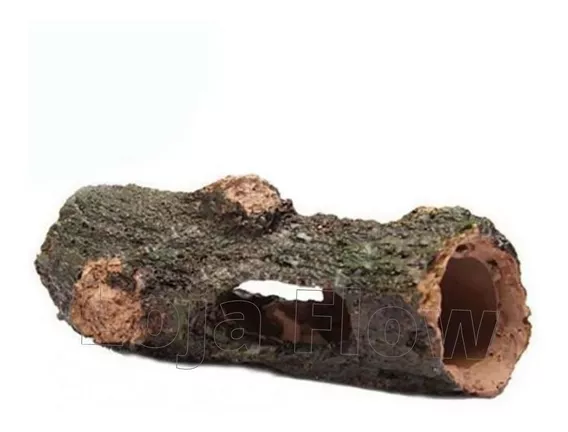
Enfeite Ornamental Para Aquário Tronco Casca Toca
Esse enfeite é sensacional, transforme seu aquário em uma bela paisagem . Ele tem 4 aberturas, proporcionando um excelente esconderijo/Toca onde os peixes podem passar, brincar e se abrigar.
R$40,00
-
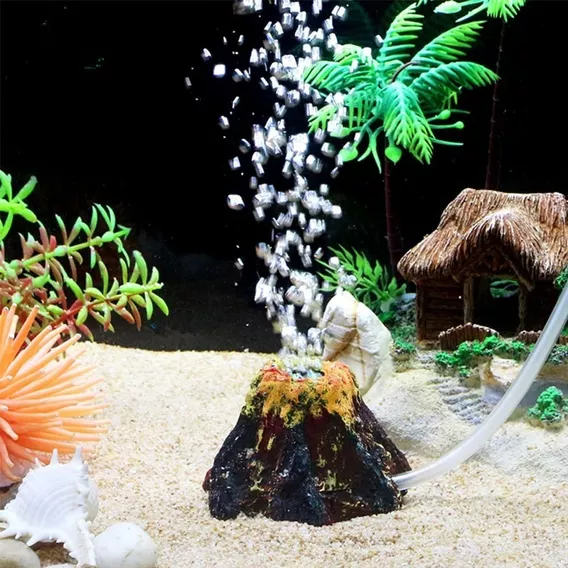
Enfeite Vulcão Oxigenador + Compressor De Ar Para Aquários
Enfeite Vulcão Oxigenador com compressor 110v ou 220 ( Escolher a voltagem nas variações) Indicado para decoração do aquário. Especificações: Material:resina atóxica Tamanho:5*6,5cm Pequeno
R$40,00